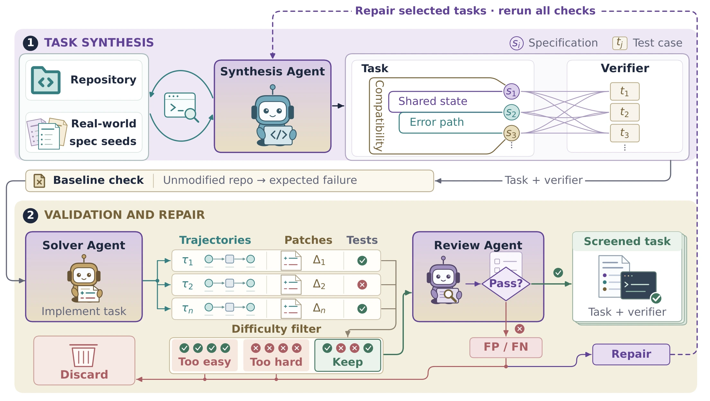

01 / GROUND⌘
Start with real engineering.
Extract and deduplicate developer requirements into a reference of specification patterns.
REAL REPOSITORIES · REAL CONSTRAINTSScaling Long-Horizon Coding
via Interdependent Specifications
Real software is a web of constraints. We build training environments that teach coding agents to reason across them.
A new feature can change state, break an interface, or alter an error path. Our tasks connect these requirements, making joint reasoning essential.
Allocate transaction coin hours across multiple recipients,
while preserving the existing single-recipient behavior.
Allocate hours in proportion to coin amounts. This decision must also respect minimum allocations and deterministic rounding in request order.
We weave requirements around shared state, execution paths, and lifecycle constraints—so implementation decisions have to work together.
A synthesis agent builds coupled tasks and executable tests. Multi-model trials and trajectory review check whether the tests reward the right behavior.
Extract and deduplicate developer requirements into a reference of specification patterns.
REAL REPOSITORIES · REAL CONSTRAINTSConnect requirements through shared decisions. Co-develop each task and its verifier in the repository.
ITERATIVE SYNTHESIS · EXECUTABLE FEEDBACKReview solver trajectories for false positives and false negatives. Repair selected tasks and rerun checks.
MULTI-MODEL REVIEW · REVALIDATION
Reinforcement learning on CodeSpecWeave improves both MiMo backbones, with the largest gains on demanding long-horizon engineering tasks.
with CodeSpecWeave RL
Paper Table 2 · three samples per task · 512K context
| Training data | CodeSpecWeave-Bench | DeepSWE-v1.1 | SWE-bench Verified | SWE-bench Pro | Average |
|---|
Gains on both backbones. Highest four-benchmark average among the compared training datasets.
Transfer to long-horizon work. DeepSWE-v1.1 improves from 12.39% to 25.30% on MiMo-V2.5.
More sustained verification. Flash-SFT edit–test loops increase from 2.96 to 4.90 per trajectory.
100 tasks. 100 repositories. 1,044 specifications.
A benchmark for engineering changes that satisfy the entire contract.
GPT-6 Astra · Codex
74.0% to 44.0% across configurations
| # | Agent framework | Gap to best |
|---|
Paper frontier comparison. Colors identify agent frameworks; configurations use different frameworks. These scores are separate from the three-sample RL evaluation above. Gap is measured against GPT-6 Astra’s reported 74.0%.
@misc{cai2026requirementsinteractscalinglonghorizon,
title={When Requirements Interact: Scaling Long-Horizon Coding via Interdependent Specifications},
author={Yishuo Cai and Minzheng Wang and Liang Zhao and Linghao Zhang and Lei Li and Shicheng Li and Xu Sun and Fuli Luo},
year={2026},
eprint={2610.40256},
archivePrefix={arXiv},
primaryClass={cs.SE},
url={https://arxiv.org/abs/2610.40256},
}